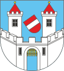
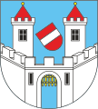

Praktické informace
Příjezd na místo
Nákupem vstupenky a obdržením identifikačního pásku je uzavřena smlouva mezi návštěvníkem a pořadatelem festivalu Hradecký slunovrat a přidružených akcích.
Pořadatelem festivalu Hradecký slunovrat je Silesia Art, z.ú., sídlem U smaltovny 1360/9, Holešovice, 170 00 Praha 7, IČ: 035 87 631.
Návštěvník festivalu obdrží po předložení vstupenky při vstupu na festival identifikační pásek na zápěstí opravňující ke vstupu do areálu. Identifikační pásek na ruce návštěvníka nahrazuje vstupenku.
Návštěvník festivalu se touto smlouvou (nákupem vstupenky či obdržením identifikačního pásku) zavazuje v celém areálu festivalu a na všech ostatních místech, kde probíhá festival, dodržovat následující Podmínky účasti na festivalu HRADECKÝ SLUNOVRAT:
Mapa areálu
Za podporu festivalu děkujeme městu Roudnice nad Labem

